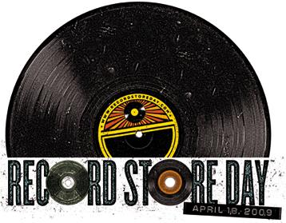

In Praise of the Independent Record Store
By Sean Caldwell
I love record stores.
For years I told myself that any money gifted to me by any lucky Lotto number or bequeathed me by any long lost relative of which I had no knowledge; any large sum of expendable income I accrued in that fantastical, daydream-worthy way, would’ve gone into opening my own record store. I still dream about it: some urban-centric brick building with Xerox strewn flyers amassed at every available inch of wall space, overlapping torn, dog-eared promotional posters, rusted baskets bursting with dusty 45s and rows and rows of plastic sealed vinyl, just sitting there waiting to be tapped like a fraternity keg.
I’ve imagined myself standing in front of a counter, my backdrop a veritable Venetian-blind stack of vertically housed CDs and 7” records, engaged by mutually obsessed patrons and getting into conversations about their many purchases as I ka-ching away and hopefully earn their eternal loyalty.
For years I told myself that any money gifted to me by any lucky Lotto number or bequeathed me by any long lost relative of which I had no knowledge; any large sum of expendable income I accrued in that fantastical, daydream-worthy way, would’ve gone into opening my own record store. I still dream about it: some urban-centric brick building with Xerox strewn flyers amassed at every available inch of wall space, overlapping torn, dog-eared promotional posters, rusted baskets bursting with dusty 45s and rows and rows of plastic sealed vinyl, just sitting there waiting to be tapped like a fraternity keg.
I’ve imagined myself standing in front of a counter, my backdrop a veritable Venetian-blind stack of vertically housed CDs and 7” records, engaged by mutually obsessed patrons and getting into conversations about their many purchases as I ka-ching away and hopefully earn their eternal loyalty.
And, I’ve imagined myself providing some inspiration to future generations of musicians, kids who’ve found their own personal Jesus within the sleeve of some anonymous black slab that demanded attention once it received rotation. I’ve wanted to own the record store that earned a place in the formative development of a rock band; or just a refuge from a possibly misunderstood other reality, sanctuary for those that only relate to other music obsessives.
I’ve always envied those that have played that role, more so than the bands they’ve spawned.
But, as music continues to lose its tangibility and personality to “convenience” and filesharing disposability, the idea of owning an independent record store in this day and age is... sadly, kind of pointless.
I’ve always envied those that have played that role, more so than the bands they’ve spawned.
But, as music continues to lose its tangibility and personality to “convenience” and filesharing disposability, the idea of owning an independent record store in this day and age is... sadly, kind of pointless.
With online purchasing and downloading, the digital age has really taken a large chunk of business out of the physical world. A few years ago, I wasn’t opposed to the quick and easy exchange of music, as I thought it would lead to enhancing purchases by a new and modern league of music lover/consumer. But, it seems to have only diminished the music-buying experience, led to an avoidance of the culture and taken all the work and fun out of discovery. Technology, as has been the case time and time again, has cultivated a complacent and lazy music-buying public, impersonalized and detached from what was once integral.
I’m guilty myself. I constantly update my Amazon wishlist, though lately I’ve been making purchases through the record store vendors, thinking that may at least help keep these stores alive. Even then, the experience is instantaneous and cold. It’s evident that I don’t get out to the store as much as I should. Apparently, none of us do. As much of a stretch as it was to imagine ever OWNING a record store, now it seems a stretch to imagine them existing in the next five years. To think that in my lifetime, I may see an end to the record store...
I’m guilty myself. I constantly update my Amazon wishlist, though lately I’ve been making purchases through the record store vendors, thinking that may at least help keep these stores alive. Even then, the experience is instantaneous and cold. It’s evident that I don’t get out to the store as much as I should. Apparently, none of us do. As much of a stretch as it was to imagine ever OWNING a record store, now it seems a stretch to imagine them existing in the next five years. To think that in my lifetime, I may see an end to the record store...
...it’s a jagged pill to swallow, sideways.
That being said, keep April 18th open because that is the second annual Record Store Day.
That being said, keep April 18th open because that is the second annual Record Store Day.

All around the country and other parts of the world, independent record stores are celebrating their existence and their love of music on that day so as to remind us what it means to be a music fan. The fact that we go out of our way to find the B-sides, the rough cuts, the imports, the oddities and rarities; the fact that we speak a language so uniquely defined by our passion; the fact that we live for a particular lyric, or intensely debate the importance of an album, or the influence of a band; the fact that we get excited about that one great haul, or find... We owe our love, our obsession and our membership into this fascinating and exclusive club to our independent record stores. We can’t allow these stores to whither away, victims of a bad economic climate and a devotion to 7-11/McDonald’s style technological convenience.
So, April 18th, before and after. Let’s try and stay indie.
So, April 18th, before and after. Let’s try and stay indie.
. . .
Tomorrow: the No Ripcord team celebrates Record Store Day by paying tribute to their favourite indie record stores.
17 April, 2009 - 19:48 — Sean Caldwell